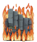

Improved ADOM Guidebook
Previous - TOC - Next
Wall of flames

The Wall of flames is encountered around D: 27. Even if the PC has fire immunity, it cannot be passed without the Chaos Orb of Elemental Fire. The Orb is found
in the Tower of Eternal Flames. The Wall of flames forces the player to retrieve it before proceeding – see section 2.5
for more on the Tower of Eternal Flames. Passing the wall with the Orb in your inventory will cause the wall to flicker and disappear permanently.
Note that the dungeon levels have an unusual arrangement at this point. PCs will suddenly descend from D: 24 to D: 28 then ascend to D: 27, D: 26, D: 25, then abruptly
descend to D: 29. The Wall of flames will be found in the middle of this sequence.
Updated November 8th, 2005